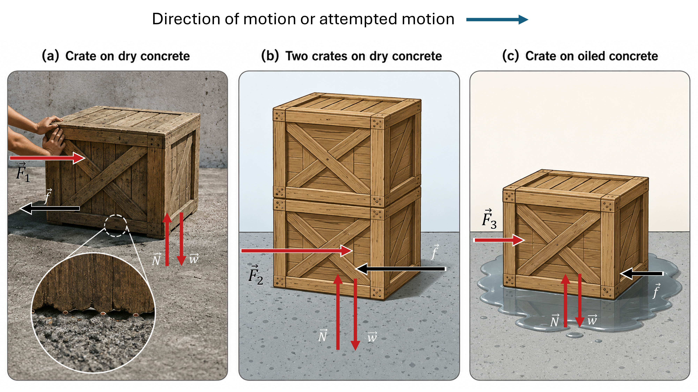
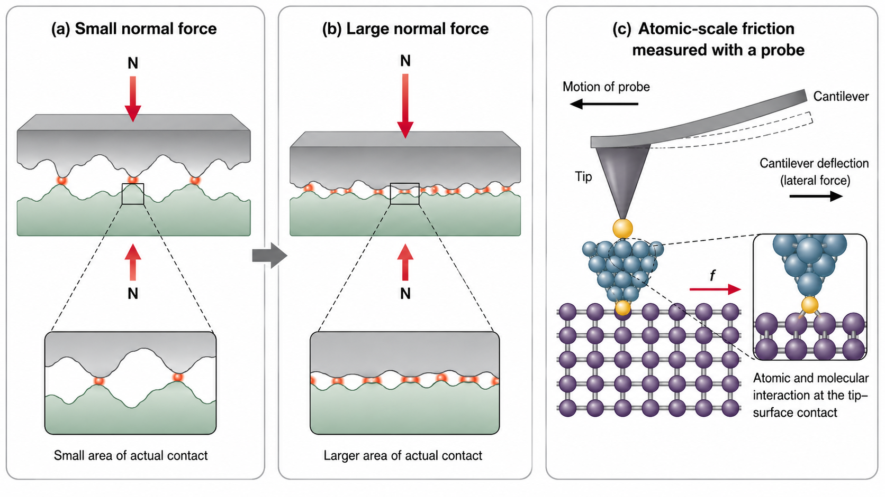
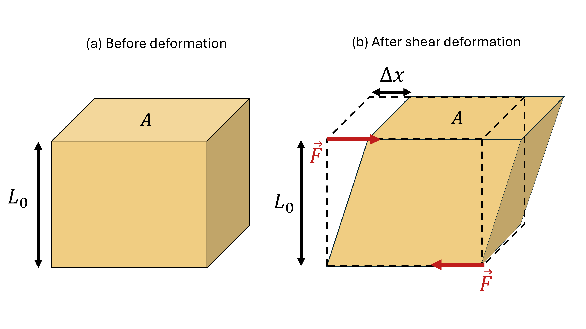

4. Friction, Drag, & Elasticity#
Aug 18, 2026 | 7244 words | 48 min read
Chapter roadmap
This chapter extends Newton’s laws to three common situations: friction between contacting surfaces, drag through fluids, and elastic deformation of materials. The goal is to connect each force model to the physical conditions that determine its magnitude and direction.
As you read, focus on three questions:
How do static and kinetic friction depend on the normal force and the surfaces in contact?
How does drag depend on an object’s motion through a fluid, and what determines terminal velocity?
How do force, geometry, and material properties determine elastic deformation?
The worked examples will use these ideas to model systems ranging from skiers and skydivers to cables, bones, and compressed fluids.
4.1. Friction#
Friction is a force that opposes relative motion between surfaces in contact, but also allows us to move (e.g., Newton’s third law and traction). The behavior of friction is complicated and not completely understood, where we rely heavily on observations to infer the nature of friction. We can deal with its more general characteristics and understand the circumstances in which it behaves.
Friction
Friction is a force that opposes relative motion between surfaces in contact.
Friction is parallel to the contact surface between surfaces and always in a direction that opposes motion (or attempted motion) of the systems relative to each other. There are two categories of friction that we often deal with:
If two surfaces are in contact and moving relative to one another, then the friction is called kinetic friction. For example, friction slows a hockey puck sliding on ice.
When objects are stationary, it is called static friction. The static friction is usually greater than the kinetic friction between the surfaces. Otherwise there would be movement.
Kinetic Friction
If two surfaces are in contact and moving relative to one another, then the friction between them is called kinetic friction.
Imagine trying to slide a heavy crate across a concrete floor, where you may push hard and not move it at all. This means that the static friction responds to what you do; it increases proportionally in magnitude, but in the opposite direction of your push. We can make some observations regarding the nature of friction from this example:
If you push hard enough, then the crate seems to slip suddenly and starts to move. Once in motion, it is easier to keep it in motion than it was to get it started, which tells us that the kinetic friction force is less than the static friction force.
If you add mass to the crate, you need to push even harder to get it started and keep it moving. This shows us that the magnitude of your initial push depends on the force perpendicular (i.e., normal) to your push.
Furthermore, if you oiled the concrete, you would find it easier to get the crate started and keep it going. This reveals that friction primarily depends on the resistance to motion at the interface.
{kind=link}

Fig. 4.1 Friction depends on both the load and the surfaces in contact. (a) A crate pushed across dry concrete experiences a frictional force \(\vec{f}\) opposite the direction of motion or attempted motion. The magnified view shows that even apparently flat surfaces contact one another at microscopic irregularities. (b) Adding a second crate increases the weight \(\vec{w}\) and normal force \(\vec{N}\), increasing the maximum frictional force and therefore the applied force needed to begin sliding. (c) Lubricating the contact surface reduces the frictional resistance, so a smaller applied force is required to move the crate. The lengths of the arrows are intended to illustrate these relative changes rather than provide a quantitative force scale.#
Figure 4.1 illustrates three scenarios: (a) a single crate on dry concrete, (b) two crates on dry concrete, and (c) a single crate on an oily surface. The forces shown in each panel illustrate how both the force pressing the surfaces together and the nature of the surfaces affect friction. The close-up in scenario (a) shows that even surfaces that appear smooth are rough on microscopic scales. Consider the following:
in scenario (a), microscopic high points on the crate and concrete come into contact and can interlock or deform as the crate is pushed. A considerable force can be resisted by friction with no apparent motion.
in scenario (b), the harder the surfaces are pushed together, the more force is needed to move them. Part of the friction is due to the adhesive force between the surface molecules of the crates and the concrete.
in scenario (c), the oil allows the crate to slide easier along the concrete. The oil fills the gap between the surface where the oil molecules flow or rotate more easily, which allows movement to occur readily. Part of the friction is described by the behavior of molecules at the surface.
Once an object is moving, there are fewer points of contact (i.e., fewer molecules adhering), so less force is required to keep the object moving. The magnitude of the frictional force depends on the situation, where it can be static (i.e., stationary) or kinetic (moving).
Magnitude of Static Friction
When there is no motion between the objects, the magnitude of static friction \(f_{\rm s}\) is
where \(\mu_{\rm s}\) is the coefficient of static friction and \(N\) is the magnitude of the normal force (i.e., force perpendicular to the surface). The \(\leq\) symbol means less than or equal to, implying that static friction can have a minimum and maximum value of \(\mu_{\rm s}N\).
Static friction is a responsive force that increases proportionally to whatever force is exerted, up to its maximum limit. Once the applied force exceeds \(f_{\rm s,max}\), the object will move. Thus, we have
Once in motion, the object is opposed by the kinetic friction instead.
Magnitude of Kinetic Friction
The magnitude of kinetic friction \(f_{\rm k}\) is given by
where \(\mu_{\rm k}\) is the coefficient of kinetic friction.
System |
Static friction \(\mu_s\) |
Kinetic friction \(\mu_k\) |
|---|---|---|
Rubber on dry concrete |
1.0 |
0.7 |
Rubber on wet concrete |
0.7 |
0.5 |
Wood on wood |
0.5 |
0.3 |
Waxed wood on wet snow |
0.14 |
0.1 |
Metal on wood |
0.5 |
0.3 |
Steel on steel (dry) |
0.6 |
0.3 |
Steel on steel (oiled) |
0.05 |
0.03 |
Teflon on steel |
0.04 |
0.04 |
Bone lubricated by synovial fluid |
0.016 |
0.015 |
Shoes on wood |
0.9 |
0.7 |
Shoes on ice |
0.1 |
0.05 |
Ice on ice |
0.1 |
0.03 |
Steel on ice |
0.04 |
0.02 |
Table 4.1 shows typical coefficients of static and kinetic friction for several pairs of surfaces. Note that the coefficients of kinetic friction are less than their static counterparts. The values of \(\mu\) are stated to only one digit (or maybe two digits), indicating that this description of friction is approximate.
The equations for static and kinetic friction include the dependence on materials and the normal force. The direction of friction is always opposite that of motion, parallel between objects, and perpendicular to the normal force. Note that the normal force depends on your coordinate system, which may not be vertically aligned.
Consider in Figure 4.1a that the crate has a mass of \(100\ {\rm kg}\), then the normal force would be equal to the weight,
perpendicular to the floor. If the coefficient of static friction is \(\mu_{\rm s} = 0.45\), you would have to exert a force (parallel to the floor) that is greater than
to move the crate. Once there is motion, the force needed to push is less and there is less frictional force to oppose the motion. Suppose the coefficient of kinetic friction \(\mu_{\rm k} = 0.30\), then we calculate that
would keep it moving at constant speed. If the floor is lubricated (Fig. 4.1c), both coefficients are considerably less. The coefficient of friction (static or kinetic) is a unitless quantity with a magnitude usually between 0 and 1.0.
Friction in your body
Many parts of the body (especially the joints) have much smaller coefficients of friction, which is often \(3-4\times\) less than that of ice. The knee joint is formed by the lower leg bone (the tibia) and the thighbone (the femur). The hip is a ball (at the end of the femur) and socket (part of the pelvis) joint. The ends of the bones in the joint are covered by cartilage, which provides a smooth surface. The joints also produce synovial fluid that reduces friction and wear.
A damaged or arthritic joint can be replaced by an artificial joint. These replacements are made of metals (stainless steel or titanium) or plastic (polyethylene), which also have very small coefficients of friction.
Other natural lubricants include: saliva in our mouths and mucus found between organs in the body. These lubricants aid in the swallowing process and allow for our organs to move past each other during heartbeats, breathing, and everyday moving. Artificial lubricants are used in ultrasonic imaging, where the gel that couples the transducer to the skin also serves to lubricate the surface between the transducer and the skin. Since the coefficient between the two surfaces is reduced, the transducer moves freely over the skin.
4.1.1. Example Problem: Skiing Exercise#
Example Problem: Skiing Exercise
The Problem
A skier with a mass of \(62\ {\rm kg}\) is sliding down the \(25^\circ\) snowy slope shown below. Find the coefficient of kinetic friction for the skier if the frictional force has a magnitude of \(45\ {\rm N}\).
Fig. 4.2 The skier moves along a \(25^\circ\) slope. The normal force is perpendicular to the slope, while kinetic friction acts parallel to the slope and opposite the motion. Source: OpenStax, College Physics 2e, Figure 5.4.#
Show worked solution
The Model
We model the skier as a particle sliding down an incline. Define the \(x\)-axis parallel to the slope with \(+x\) pointing downhill, and define the \(y\)-axis perpendicular to the slope with \(+y\) pointing away from the surface. The skier has no acceleration perpendicular to the slope, so the normal force balances the perpendicular component of the weight. The known quantities are \(m=62\ {\rm kg}\), \(\theta=25^\circ\), and \(f_{\rm k}=45\ {\rm N}\). The unknown is the coefficient of kinetic friction \(\mu_{\rm k}\).
The Math
The kinetic-friction model relates the magnitude of the frictional force to the normal force:
To evaluate this relationship, we first need the normal force. Because the skier has no acceleration perpendicular to the slope, Newton’s second law in the \(y\)-direction requires the normal force to balance the perpendicular component of the skier’s weight:
Substituting this expression for \(N\) into the kinetic-friction relation and solving for the coefficient of kinetic friction gives
The coefficient of kinetic friction then follows directly from the given values:
The Conclusion
The coefficient of kinetic friction is \(\boxed{\mu_{\rm k}=0.082}.\) This value is somewhat smaller than the typical value listed for waxed wood on wet snow, but coefficients of friction are approximate and vary with surface conditions, so the result is reasonable.
Adapted from OpenStax, College Physics 2e, Example 5.1.
Check Your Understanding: Sliding at Constant Speed
The Problem
An object slides down an incline at constant velocity. Show that the coefficient of kinetic friction is related to the incline angle by \(\mu_{\rm k}=\tan\theta\).
Show worked solution
The Model
Define the \(x\)-axis along the incline with \(+x\) pointing downhill. Because the object moves at constant velocity, its acceleration is zero and the net force along the slope must vanish. The downhill component of the weight is \(mg\sin\theta\), while kinetic friction acts uphill. Perpendicular to the slope, \(N=mg\cos\theta\).
The Math
Because the object moves at constant velocity, its acceleration is zero. Newton’s second law along the slope therefore requires the downhill component of the weight to balance the uphill kinetic-friction force:
The common factors \(m\) and \(g\) cancel from both sides, so solving for the coefficient of kinetic friction gives
The Conclusion
For an object that slides down an incline at constant velocity, \(\boxed{\mu_{\rm k}=\tan\theta}.\) A steeper constant-speed incline therefore corresponds to a larger coefficient of kinetic friction.
Adapted from the OpenStax, College Physics 2e, Section 5.1 Take-Home Experiment.
{kind=link}

Fig. 4.3 Microscopic origins of friction. (a) When two rough surfaces are pressed together with a small normal force, they touch only at a few microscopic high points, or asperities, so the actual area of contact is much smaller than the apparent contact area. (b) Increasing the normal force deforms the asperities and increases the area of actual contact, allowing stronger frictional interactions to develop between the surfaces. (c) At the atomic scale, friction arises from interactions between atoms and molecules at the points of contact. These interactions can be studied using an atomic force microscope (AFM), which measures small lateral forces through the deflection of a cantilever as its probe moves across a surface. For a more detailed introduction to AFM and tip–surface interactions, see the Chemistry LibreTexts discussion of Atomic Force Microscopy.#
Figure 4.3 illustrates a macroscopic characteristic of friction and how we measure on surfaces on the atomic scale. For many dry surfaces, friction is approximately proportional to the normal force but is nearly independent of the apparent, or macroscopic, area of contact. This may seem counterintuitive.
Even surfaces that appear smooth are rough on microscopic scales, so they actually touch only at small high points called asperities. The combined area of these microscopic contacts (the real area of contact) is only a small fraction of the apparent contact area. Increasing the normal force deforms the asperities and increases the real area of contact. Because frictional interactions occur at these microscopic contacts, the frictional force increases as the real contact area increases.
The atomic-scale view helps us understand why friction occurs and why rubbing surfaces can produce heat. As two surfaces slide, atoms at their microscopic contact points interact, deform, and vibrate. Some of the mechanical energy of the motion is therefore converted into thermal energy.
Figure 4.3c shows how these interactions can be studied with an atomic force microscope (AFM). An AFM works somewhat like the needle of a record player: a very small probe moves across the surface and responds to its features. Forces between the probe and the surface cause the cantilever holding the probe to bend. By measuring this deflection, researchers can measure friction at extremely small scales.
4.2. Drag Forces#
When an object is moving in a fluid (either a gas or liquid), it experiences a drag force that opposes its motion. You feel the drag force when you move your hand through water or outside your car window when moving at high speed. You feel the drag move your hand, but the faster you move your hand, the harder it is to move. You feel a smaller drag force when you tilt your hand so only the side goes through the fluid. You decreased the area that faced the direction of motion.
The drag force is similar to friction in that it always opposes the motion. Unlike simple friction, the drag force is proportional to some function of velocity of the object in that fluid. It also depends on the shape of the object, its size, and the type of fluid. For most large objects (e.g., bicyclists, cars, and baseballs not moving slowly), the magnitude of the drag force \(F_{\rm D}\) is proportional to the square of the speed of the object, or \(F_{\rm D} \propto v^2\).
Drag Force
More generally, we express the drag force mathematically as
where \(C\) is the drag coefficient, \(A\) is the area of the object facing the fluid (i.e., perpendicular to the motion), and \(\rho\) is the density of the fluid. When an object is moving at high velocity through air, the magnitude of the drag force is proportional to the square of the speed (or \(n=2\)). For small particles at low speeds in a fluid, the exponent \(n = 1\).
Athletes and car designers want to reduce the drag force to lower their race times. “Aerodynamic” shaping of an automobile can reduce the drag force and increase your car’s gas mileage. The value of the drag coefficient \(C\) is determined empirically, usually with the use of a wind tunnel. The drag coefficient can depend upon velocity, but we assume that it is a constant here. Table 4.2 lists some typical drag coefficients for a variety of objects. Notice that the drag coefficient is a unitless (or dimensionless) quantity.
Object |
\(C\) |
|---|---|
Airfoil |
0.05 |
Toyota Camry |
0.28 |
Ford Focus |
0.32 |
Honda Civic |
0.36 |
Ferrari Testarossa |
0.37 |
Dodge Ram pickup |
0.43 |
Sphere |
0.45 |
Hummer H2 SUV |
0.64 |
Skydiver (feet first) |
0.70 |
Bicycle |
0.90 |
Skydiver (horizontal) |
1.0 |
Circular flat plate |
1.12 |
At highway speeds, over \(50\%\) of the car’s power is generated to overcome air drag. The most fuel-efficient cruising speed is about \(45-50\ {\rm mph}\) (or \(70-80\ {\rm kph}\)). During the 1970s oil crisis in the United States, the maximum speeds on highways were set at about \(55\ {\rm mph}\) (or about \(90\ {\rm kph}\)).
Substantial research is underway in the sporting world to minimize drag, where this includes the design of golf balls, athletic clothing, and even bodysuits. Innovations by athletes to minimize drag (e.g., shaving their body hair) can slice away milliseconds in a race, which can be the difference between a gold and silver medal.
Let’s consider the effects of drag forces upon a moving object and the connections to Newton’s second law. When a skydiver falls through air under the influence of gravity, there is another force acting on him, the drag force. The downward force of gravity remains constant regardless of the velocity at which the person is moving. As the person’s velocity increases (through acceleration), the magnitude of the drag force increases until the magnitude of the drag force is equal to the gravitational force. This produces a zero net force.
A zero net force means that there is no acceleration, as given by Newton’s second law. At this point, the person’s velocity remains constant and we say the person (or object) has reached the terminal velocity (\(v_{\rm t}\)). Since \(F_{\rm D}\) is proportional to the speed, a heavier skydiver must go faster for \(F_{\rm D}\) to equal his weight.
At the terminal velocity, we have
Notice that we chose the positive \(y\)-axis to point downwards so that we have \(+g\). Drag opposes the motion, which means it points in the opposite (or \(-y\)) direction. Since we are examining the case with zero net force, we could have made the opposite choice with \(-g\) and \(+F_{\rm D}\) to arrive at the same final result.
Using the equation for drag force, we have
which we use algebra to solve for the velocity to get
Assume the density of air is \(\rho = 1.21\ {\rm kg/m^3}\). A \(75\)-kg skydiver descending headfirst has an area \(A=0.18\ {\rm m^2}\) and a drag coefficient \(C = 0.70\). We can find the terminal velocity as
This means a \(75\)-kg skydiver achieves a maximum terminal velocity of about \(350\ {\rm kph}\) while traveling in a headfirst position, which minimizes the area and drag. In a spread-eagle position, that terminal velocity may decrease to about \(200\ {\rm kph}\) as the area increases. It decreases even further after the parachute opens.
4.2.1. Example Problem: A Terminal Velocity#
Example Problem: A Terminal Velocity
The Problem
Find the terminal velocity of an \(85\ {\rm kg}\) skydiver falling in a spread-eagle position.
Show worked solution
The Model
We model the skydiver using quadratic air drag. Define the vertical \(y\)-axis with \(+y\) downward. At terminal velocity the acceleration is zero, so the downward weight and upward drag force have equal magnitudes. We use \(\rho=1.21\ {\rm kg/m^3}\) for the density of air and \(C=1.0\) for a horizontal skydiver. Following the source estimate, the projected area is approximately the product of a \(2\ {\rm m}\) body length and a \(0.35\ {\rm m}\) width.
The Math
At terminal velocity, the skydiver’s acceleration is zero. With downward chosen as the positive direction, Newton’s second law requires the downward weight to balance the upward drag force:
For a skydiver moving rapidly through air, the drag-force magnitude is modeled by the quadratic relation
Setting the drag force equal to the weight and solving symbolically for the terminal speed gives
The projected area is estimated from the skydiver’s approximate body dimensions. Using a length of \(2\ {\rm m}\) and a width of \(0.35\ {\rm m}\) gives
With the projected area known, the terminal speed is
To express the same speed in kilometers per hour, we convert the units using \(1\ {\rm m/s} = 3.6\ {\rm kphh}\):
The Conclusion
The estimated terminal velocity is \(\boxed{v_{\rm t}\approx44\ {\rm m/s}\approx160\ {\rm kph}}.\) The result is lower than the headfirst terminal velocity discussed in the text because the spread-eagle position presents a much larger area to the airflow and therefore produces more drag at a given speed.
Adapted from OpenStax, College Physics 2e, Example 5.2.
Check Your Understanding: Coffee Filters and Terminal Velocity
The Problem
Identical coffee filters can be nested so that their mass increases while their frontal area and drag coefficient remain approximately unchanged. What relationship should a graph of \(v_{\rm t}^2\) versus mass have once the filters reach terminal velocity?
Show worked solution
The Model
The filters have the same shape and frontal area, so \(C\), \(A\), and the air density \(\rho\) are treated as constants. At terminal velocity the drag force balances the weight.
The Math
For quadratic drag, the terminal-speed relation is
The filters have the same shape and frontal area, so \(C\), \(\rho\), and \(A\) remain constant as filters are added. Squaring the terminal-speed relation makes the dependence on mass explicit:
Because the factor in parentheses is constant for this experiment, the equation has the linear form \(v_{\rm t}^2=Km\). Therefore, \(v_{\rm t}^2\) is directly proportional to the total mass of the nested filters.
The Conclusion
A graph of \(v_{\rm t}^2\) versus \(m\) should be approximately a straight line through the origin. This is why plotting \(v_{\rm t}^2\) rather than \(v_{\rm t}\) provides a direct test of the quadratic-drag model.
Adapted from the OpenStax, College Physics 2e, Section 5.2 Take-Home Experiment.
The size of the object that is falling through air affects the drag significantly. The terminal velocity of a squirrel is much less than for a skydiver, which means that the squirrel can fall from a significant height without injury.
The drag force follows a different mathematical relationship if the object is very small, is going very slow, or is in a denser medium than air. Instead it is proportional to just the velocity. This relationship is given by Stokes’ law.
Stokes’ Law
Stokes’ law states that the drag force is
where \(r\) is the radius of the object, \(\eta\) is the viscosity of the fluid, and \(v\) is the object’s velocity.
Microorganisms, pollen, and dust particles are small enough so that they can travel unaided only at a constant (terminal) velocity. Terminal velocities for bacteria (\(r{\sim}1\ \mu{\rm m}\)) can be about \(2\ \mu{\rm m/s}\). To move a greater speed, many bacteria swim using flagella that are powered by little motors embedded in the cell. Sediment in a lake can move at about \(5\ \mu{\rm m/s}\), so it can take days to reach the bottom of the lake after being deposited on the surface.
Fish, dolphins, and whales are streamlined in shape to reduce drag forces. Birds are streamlined, where migratory species have long necks to reduce drag in long flights. Flocks of birds fly in a V-shape to form a streamlined pattern.
4.3. Elasticity: Stress and Strain#
Some forces affect an object’s shape rather than affecting its motion (e.g., friction and drag). A change in shape due to the application of forces is a deformation. Even very small forces are known to cause some deformation. For small deformations (e.g., for a rubber band or spring), two important characteristics are observed.
The object returns to its original shape when the force is removed (i.e., the deformation is elastic).
The size of the deformation is proportional to the force (i.e., Hooke’s law is obeyed).
Hooke’s Law
Hooke’s law is given by
where \(\Delta L\) is the change in length (or deformation in 1D) produced by the force \(F\), \(L_0\) is the rest length, and \(k\) is a proportionality constant that depends on the shape and composition of the object. If the amount of applied force \(F\) and the proportionality constant based on the material are both known, then we can rearrange this expression to find the change in length
Note that the applied force \(F\) will have a sign, where \(\Delta L > 0\) represents an extension while a \(\Delta L < 0\) is a compression.
Hooke’s law can apply to springs and human bone (see Figure 4.4). For metals or springs, the straight line region is much larger. Bones are brittle and the elastic region is small and the fracture region is abrupt. Eventually a large enough stress to the material will cause it to break or fracture. Tensile strength is the breaking stress that will cause permanent deformation or fracture of the material.
Fig. 4.4 Elastic and permanent deformation. The change in length \(\Delta L\) increases with the applied force \(F\). For small deformations, the relationship is linear and Hooke’s law applies; the slope of this region is \(1/k\). At larger forces, the relationship becomes nonlinear but can remain elastic, so the object returns to its original length when the force is removed. Beyond the elastic region, the deformation becomes permanent and sufficiently large forces eventually cause fracture. Source: OpenStax, College Physics 2e, Figure 5.11.#
The proportionality constant \(k\) depends upon a number of factors for the material. For example, a guitar string made of nylon stretches when it is tightened, and the extension \(\Delta L\) is proportional to the force applied. Thicker nylon strings (e.g., for an electric bass guitar) and ones made of steel stretch less for the same applied force, implying that they have a larger \(k\).
{kind=link}
Fig. 4.5 String thickness and stiffness. The same downward force (the same hanging weight \(w\)) is applied to three strings of the same original length \(L_0\), but with different thicknesses. The thinnest string stretches the most, producing the largest extension \(\Delta L\), while the thickest string stretches the least. This shows that thicker strings have a larger stiffness constant \(k\), so they deform less under the same applied force. In musical instruments, this is one reason bassists often use thicker strings for lower tunings: the strings remain tighter and can produce a heavier, more aggressive sound.#
Check Your Understanding: Rubber Bands in Parallel and Series
The Problem
A rubber band stretches \(3\ {\rm cm}\) when a \(100\ {\rm g}\) mass is attached. How far would two identical rubber bands stretch if the same mass were supported (a) by the two bands in parallel and (b) by the two bands tied together in series?
Show worked solution
The Model
For small deformations, each rubber band is approximated as obeying Hooke’s law. One band has stiffness \(k\). Two identical bands in parallel share the load and have an effective stiffness \(2k\). Two identical bands in series each carry the same force, and their extensions add, giving an effective stiffness \(k/2\).
The Math
Let \(\Delta L_1=3\ {\rm cm}\) be the extension of one rubber band under the force produced by the \(100\ {\rm g}\) mass. Hooke’s law for the single band is therefore
When two identical bands support the mass in parallel, the bands share the load and the effective stiffness becomes \(2k\). The extension of the parallel combination follows from
Since the applied force is the same as it was for the single band, equating the two expressions for \(F\) gives
When the two bands are connected in series, each band carries the same force and the two individual extensions add. The effective stiffness is therefore \(k/2\), so the total extension satisfies
Comparing this equation with the single-band relation shows that the series combination stretches twice as far:
The Conclusion
The two parallel bands stretch \(\boxed{1.5\ {\rm cm}},\) while the two bands in series stretch a total of \(\boxed{6\ {\rm cm}}.\) Putting elastic elements in parallel makes the system stiffer; putting them in series makes the system easier to stretch.
Adapted from OpenStax, College Physics 2e, “Stretch Yourself a Little”.
4.3.1. Changes in Length – Tension and Compression: Elastic Modulus#
A change in length \(\Delta L\) occurs when the applied force to a wire or rod is parallel to its length \(L_0\), either stretching (causing tension) or compressing it.
Fig. 4.6 Tension and compression of a rod. (a) In tension, equal and opposite forces pull on the rod parallel to its length, stretching it by an amount \(\Delta L\) relative to its original length \(L_0\). (b) In compression, equal and opposite forces push inward on the rod, shortening it by \(\Delta L\). The cross-sectional area \(A\) is used in defining stress and strain. Source: OpenStax, College Physics 2e, Figure 5.13.#
The change in length (\(\Delta L\)) depends on only a few variables. The change in length \(\Delta L\) is
proportional to the force \(F\) and depends on the composition of the object,
proportional to the original length \(L_0\), and
inversely proportional to the cross-sectional area \(A\) of the wire or rod.
For example, a long guitar string will stretch more than a short one, and a thick string will stretch less than a thin one. We combine all these factors into one equation for \(\Delta L\):
where \(F\) is the applied force, \(Y\) is a factor called the elastic modulus (or Young’s modulus) that depends on the substance, \(A\) is the cross-sectional area, and \(L_0\) is the original length.
Table 4.3 lists values of \(Y\) for several materials, which are approximate averages. Young’s modulus \(Y\) for tension and compression can differ; the table lists averaged values except for bone, which differs significantly in tension and compression. Young’s moduli are not listed for liquids or gases in Table 4.3 because they cannot be stretched or compressed in only one direction.
Material |
Young’s modulus \(Y\) |
Shear modulus \(S\) |
Bulk modulus \(B\) |
|---|---|---|---|
Aluminum |
70 |
25 |
75 |
Bone — tension |
16 |
80 |
8 |
Bone — compression |
9 |
||
Brass |
90 |
35 |
75 |
Brick |
15 |
||
Concrete |
20 |
||
Glass |
70 |
20 |
30 |
Granite |
45 |
20 |
45 |
Hair (human) |
10 |
||
Hardwood |
15 |
10 |
|
Iron, cast |
100 |
40 |
90 |
Lead |
16 |
5 |
50 |
Marble |
60 |
20 |
70 |
Nylon |
5 |
||
Polystyrene |
3 |
||
Silk |
6 |
||
Spider thread |
3 |
||
Steel |
210 |
80 |
130 |
Tendon |
1 |
||
Acetone |
0.7 |
||
Ethanol |
0.9 |
||
Glycerin |
4.5 |
||
Mercury |
25 |
||
Water |
2.2 |
4.3.2. Example Problem: The Stretch of a Long Cable#
Example Problem: The Stretch of a Long Cable
The Problem
A suspension cable has an unsupported span of \(3020\ {\rm m}\). Calculate the amount of stretch in the steel cable if its diameter is \(5.6\ {\rm cm}\) and the tension is \(3.0\times10^6\ {\rm N}\).
Show worked solution
The Model
We model the cable as a uniform steel cylinder undergoing a small tensile deformation. Tension is taken as positive, so \(\Delta L>0\). The known quantities are \(L_0=3020\ {\rm m}\), \(F=3.0\times10^6\ {\rm N}\), diameter \(d=5.6\ {\rm cm}\), and the Young’s modulus of steel \(Y=210\times10^9\ {\rm N/m^2}\). The unknown is the extension \(\Delta L\).
The Math
The axial deformation of a uniform cable is related to the applied tension, original length, Young’s modulus, and cross-sectional area by
Before using this relation, we need the cable’s cross-sectional area. A diameter of \(5.6\ {\rm cm}\) corresponds to a radius of \(r=2.8\ {\rm cm}=2.8\times10^{-2}\ {\rm m}\), so the area is
With the geometry known, the extension follows by inserting the tension, original length, Young’s modulus of steel, and cross-sectional area into the deformation equation:
The Conclusion
The cable stretches by approximately \(\boxed{\Delta L\approx18\ {\rm m}}.\) Although \(18\ {\rm m}\) sounds large, it is only about \(0.6\%\) of the unsupported span. For a cable this long, temperature-dependent expansion and contraction can also become important.
Adapted from OpenStax, College Physics 2e, Example 5.3.
Elasticity in Your Body
Bones do not fracture due to tension or compression, where they generally fracture due to sideways impact or bending, resulting in the bone shearing or snapping. The behavior of bones under tension and compression helps determine the load the bones can carry. Bones are classified as weight-bearing structures (e.g., columns in buildings or trees). Weight-bearing structures usually have support structures where columns in building have steel-reinforcing rods, but trees and bones are fibrous. The bones in different parts of the body have different structural functions and are prone to different stresses.
The bone in the top of the femur is arranged in thin sheets separated by marrow while in other places can be cylindrical and filled with marrow (or just solid). Overweight people have a tendency toward bone damage due to sustained compressions in bone joints and tendons.
Hooke’s law occurs in tendons. The tendon must stretch easily at first when a force is applied, but offer a restoring force for a greater strain. Some tendons have a high collagen content so there is relatively little strain (or length change). In contrast, support tendons can change length by \({\sim}10\%\). The stress-strain relationship is nonlinear, since the slope of the line changes in different regions.
Fig. 4.7 Stress–strain behavior of a tendon. A tendon does not behave like an ideal Hooke’s-law material over its entire range of deformation. At small strains, the collagen fibers begin to straighten and align in the toe region. This is followed by a linear region, where stress increases approximately proportionally with strain. At still larger strains, individual fibers begin to break and the tendon enters the failure region. Source: OpenStax, College Physics 2e, Figure 5.15.#
In the first part of the stretch curve called the toe region, the fibers in the tendon begin to align in the direction of the stress, or uncrimping. In the linear region, the fibrils (smaller structural units that make up the larger fibers) will be stretched. In the failure region, individual fibers begin to break.
A simple model of this relationship uses springs in parallel: different springs are activated at different lengths of stretch. Ligaments (tissue connecting bone to bone) behave in a similar way.
Unlike bones and tendons, the arteries and lungs need to be very stretchable. The elastic properties of the arteries are essential for blood flow. The pressure in the arteries increases and arterial walls stretch when the blood is pumped out of the heart. When you are feeling your pulse, you are feeling the elastic behavior of the arteries as the blood gushes through with each pump of your heart.
The lungs expand with muscular effort when we breathe in but relax freely and elastically when we breathe out. Our skins are particularly elastic, especially for the young. A young person can go from \(100\ {\rm kg}\) to \(60\ {\rm kg}\) with no visible sag in their skins. The elasticity of all organs reduces with age.
4.3.3. Example Problem: How Much Does Your Leg Shorten?#
Example Problem: Calculating Deformation—How Much Does Your Leg Shorten When You Stand on It?
The Problem
Calculate the change in length of the femur when a \(70\ {\rm kg}\) person supports \(62\ {\rm kg}\) of their mass on it. Model the femur as a uniform rod \(40\ {\rm cm}\) long and \(2.0\ {\rm cm}\) in radius.
Show worked solution
The Model
We model the femur as a uniform rod under compression. We use the convention that tensile deformation is positive and compressive deformation is negative, so the axial force and \(\Delta L\) are negative in this problem. The supported mass is \(62\ {\rm kg}\), \(L_0=0.40\ {\rm m}\), \(r=0.020\ {\rm m}\), and the compression value of Young’s modulus for bone is \(Y=9\times10^9\ {\rm N/m^2}\).
The Math
The force compressing the femur is the weight supported by that leg. With tensile deformation defined as positive, compression is negative, so the axial force is
The femur is modeled as a uniform cylinder, so its cross-sectional area is determined from its radius: \(A=\pi r^2.\) For a uniform rod undergoing axial deformation, Young’s modulus relates the signed change in length to the applied force through
Using the compression value of Young’s modulus for bone and substituting the known quantities gives
The Conclusion
The femur shortens by approximately \(\boxed{\Delta L=-2.1\times10^{-5}\ {\rm m}},\) or about \(0.02\ {\rm mm}\). The negative sign indicates compression. The very small deformation is consistent with our experience that bone is relatively rigid.
Adapted from OpenStax, College Physics 2e, Example 5.4.
The equation for change in length can be rearranged into the following form to define the stress (measured in \(\rm N/m^2\)):
where the ratio of the change in length is defined as the strain (a unitless quantity):
In this form, the equation is analogous to Hooke’s law, with stress analogous to force and strain analogous to deformation. We can see this through rearranging to get:
where we can replace the fraction in parentheses as \(k = \frac{YA}{L_0}\).
4.3.4. Sideways Stress: Shear Modulus#
Unlike tension and compression (which occur parallel to \(L_0\)), a shearing force is a sideways stress that is perpendicular to \(L_0\). Here the deformation is called \(\Delta x\). Shear deformation behaves similarly to tension and compression. Therefore, the expression for shear deformation \(\Delta x\) is a similar equation.
Shear Deformation
The shear deformation is given mathematically by
where \(S\) is the shear modulus (see Table 4.3). The force \(F\) is applied perpendicular to \(L_0\) and parallel to the cross-sectional area \(A\). To keep the object from accelerating, there are actually two equal and opposite forces (see Figure 4.8).
{kind=link}

Fig. 4.8 Shear deformation. (a) Before deformation, the material has height \(L_0\) and a surface area \(A\) over which a force can act. (b) Equal and opposite forces applied parallel to the surfaces produce a shear deformation, shifting the top of the material horizontally by \(\Delta x\) relative to the bottom. The dashed outline shows the original, undeformed shape.#
Applications of shear to the body
The spinal column provides the main support for the head and upper part of the body. The spinal column has normal curvature for stability, but this curvature can be increased which leads to increased shearing forces on the lower vertebrae. Discs are better at withstanding compressional forces than shear forces. Because the spine is not vertical, the weight of the upper body exerts some of both (shear and compression forces).
Pregnant women and people with large abdomens need to move their shoulders back to maintain balance, which increases the curvature in their spine and also increases the shear component of the stress. An increased angle due to more curvature increases the shear forces along the plane. These higher shear forces increase the risk of back injury through ruptured discs.
Application of shear to structures
The shear moduli for concrete and brick are very small, where they are too highly variable to be listed. Concrete used in buildings can withstand compression (e.g., in pillars and arches), but is very poor against the shear encountered in heavily loaded floors or during earthquakes. Modern structures use steel and steel-reinforced concrete to mitigate the shear forces during these events. By definition, liquids and gases have shear moduli near zero because they flow in response to shearing forces.
4.3.5. Example Problem: A Nail Under a Shear Load#
Example Problem: Calculating Force Required to Deform—That Nail Does Not Bend Much Under a Load
The Problem
Find the mass of the picture hanging from the steel nail shown below if the nail bends by only \(1.80\ \mu{\rm m}\). Assume the shear modulus is known to two significant figures.
Fig. 4.9 The nail is loaded in shear by the picture’s weight. The figure provides the nail diameter, the effective length \(L_0\), and the small shear displacement \(\Delta x\). Source: OpenStax, College Physics 2e, Figure 5.17.#
Show worked solution
The Model
The downward force exerted by the picture is its weight \(mg\). The wall exerts an equal and opposite force on the nail, producing shear. The figure gives a nail diameter of \(1.50\ {\rm mm}\), so \(r=0.750\ {\rm mm}\), an effective length \(L_0=5.00\ {\rm mm}\), and a shear displacement \(\Delta x=1.80\ \mu{\rm m}\). For steel, \(S=80\times10^9\ {\rm N/m^2}\). The unknown is the picture’s mass.
The Math
The shear-deformation relation connects the sideways displacement \(\Delta x\) to the shear force, the material’s shear modulus, the cross-sectional area, and the effective length of the nail:
The unknown in this problem is ultimately the picture’s mass, so we first solve the shear relation for the force:
The nail has a radius of \(0.750\ {\rm mm}=0.750 \times 10^{-3}\ {\rm m}\). Its circular cross-sectional area is therefore
Using the shear modulus of steel together with the nail’s area, effective length, and measured displacement gives the shear force:
This shear force is produced by the picture’s weight, so \(F=mg\). Solving for the mass gives
The Conclusion
The picture has a mass of approximately \(\boxed{m=5.2\ {\rm kg}}.\) This is a fairly massive picture, yet the nail flexes by only \(1.80\ \mu{\rm m}\), a displacement far too small to see with the unaided eye.
Adapted from OpenStax, College Physics 2e, Example 5.5.
4.3.6. Changes in Volume: Bulk Modulus#
An object will be compressed in all directions if inward forces are evenly applied on all its surfaces. Gases are more easily compressed than liquids or solids. The reason for these different compressibilities is that atoms and molecules are separated by large empty spaces in gases but packed close together in liquids and solids. You must actually compress their atoms and molecules, as well as the very strong electromagnetic forces in them that oppose this compression.
Fig. 4.10 Bulk compression. Uniform inward forces produce a decrease in volume. The bulk modulus relates the applied force per unit area to the fractional change in volume. Source: OpenStax, College Physics 2e, Figure 5.18.#
We describe the compression (or volume deformation) of an object mathematically following the form in Eqn. (4.11). Since the force is applied evenly to all sides, they have the same stress on all surfaces. The deformation produced is a change in volume \(\Delta V\) instead, which behaves similarly to the shear, tension, and compression. The relationship of the change in volume to other physical quantities is given by
where \(B\) is the bulk modulus, \(V_0\) is the original volume, and \(F/A\) is the force per unit area applied inward on all surfaces.
What are some examples of bulk compression of solids and liquids?
Industrial-grade diamonds are manufactured by compressing carbon with an extremely large force per unit area. The carbon atoms rearrange their crystalline structure into a more tightly packed pattern to form the diamonds. In nature, a similar process occurs deep underground, where extremely large forces result from the weight of the overlying material.
Another natural source of large compressive forces is the pressure created by the weight of water, especially in the deep ocean. Water exerts an inward force on all surfaces of a submerged object, and even on the water itself. At great depths, water is measurably compressed.
Some solids and liquids create very large forces when they try to expand but are constrained by the bonds. This occurs when a contained material warms up since most materials expand when their temperature increases. If the materials are tightly constrained, they deform or break their container. Water expands when it freezes, unlike most materials that shrink. It can easily fracture a boulder, rupture a biological cell, or crack an engine block that gets in its way.
4.3.7. Example Problem: Water Compression at Ocean Depth#
Example Problem: Calculating Change in Volume—How Much Is Water Compressed at Great Ocean Depths?
The Problem
Calculate the fractional decrease in volume, \(\lvert\Delta V\rvert/V_0\), for seawater at a depth of \(5.00\ {\rm km}\), where the force per unit area is \(5.00\times10^7\ {\rm N/m^2}\).
Show worked solution
The Model
The water is compressed uniformly from all directions, so the bulk modulus is the appropriate material property. From Table 4.3, water has \(B=2.2\times10^9\ {\rm N/m^2}\). Because the question asks for the fractional decrease in volume, we calculate the positive magnitude \(\lvert\Delta V\rvert/V_0\).
The Math
The bulk modulus relates a uniform pressure to the fractional change in volume. Because the problem asks for the magnitude of the volume decrease, we use
At a depth of \(5.00\ {\rm km}\), the applied force per unit area is \(5.00\times10^7\ {\rm N/m^2}\). Dividing this pressure by the bulk modulus of water gives the fractional decrease in volume:
Multiplying the fractional change by \(100\%\) expresses the same result as a percentage: \(0.023 \times 100\% = 2.3\%.\)
The Conclusion
The seawater volume decreases by approximately \(\boxed{\frac{\lvert\Delta V\rvert}{V_0}=0.023=2.3\%}.\) The change is measurable but still small despite the enormous pressure, illustrating how difficult it is to compress liquids.
Adapted from OpenStax, College Physics 2e, Example 5.6.
4.4. Homework#
4.4.1. Instructions#
Homework assignment
The homework is designed to give you regular practice applying the ideas developed in this chapter. A read-only Jupyter notebook template for the assignment is available on D2L. Before entering any work, you must make your own editable copy of the notebook. Changes made directly to the read-only template cannot be saved, so confirm that you can rename and save your copy before beginning.
There are two types of homework questions:
Conceptual questions: Copy the question into your notebook and answer it under a heading titled The Conclusion. Your response should be a paragraph that directly answers the question and explains the physical reasoning behind your answer. A Model or Math section is not required unless the question genuinely requires a calculation.
Quantitative questions: Copy the problem into your notebook and organize your solution using the Problem–Model–Math–Conclusion format. Identify the physical situation, assumptions, knowns, unknowns, and sign convention in the Model; develop and apply the necessary equations in the Math; and state, interpret, and check your result in the Conclusion. Include units in numerical substitutions.
The worked examples and Check Your Understanding questions on the course webpage provide examples of the reasoning and solution style expected in your homework.
Don’t wait until the night it is due
Homework is much easier to manage when you complete a couple of problems at a time as you work through the chapter. This gives you time to identify concepts that you do not understand and ask questions before the due date. Trying to complete the entire assignment the night it is due usually leaves little time to diagnose mistakes or revisit the course material.
Submission
When your assignment is complete, export the Jupyter notebook as a PDF and submit the PDF to D2L by 11:59 p.m. CT on the due date.
Name your submitted file using the format LastName_ChXX_HW.pdf. Replace LastName with your last name and XX with the two-digit chapter number. For example, homework for Chapter 2 submitted by Jane Smith would be Smith_Ch02_HW.pdf.
Before submitting, open the PDF and make sure that all questions, equations, figures, and solutions are visible and readable.
4.4.2. Conceptual Questions#
Problem 1
When you learn to drive, you discover that you need to let up slightly on the brake pedal as you come to a stop or the car will stop with a jerk. Explain this in terms of the relationship between static and kinetic friction.
Problem 2
The elastic properties of the arteries are essential for blood flow. Explain the importance of this in terms of the characteristics of the flow of blood (pulsating or continuous).
4.4.3. Quantitative Questions#
Problem 3
Suppose you have a \(120\)-kg wooden crate resting on a wood floor. (a) What maximum force can you exert horizontally on the crate without moving it? (b) If you continue to exert this force once the crate starts to slip, what will the magnitude of its acceleration then be?
Problem 4
The terminal velocity of a person falling in air depends upon the weight and the area of the person facing the fluid. Find the terminal velocity (in meters per second and kilometers per hour) of an \(80\)-kg skydiver falling in a headfirst position with a cross-sectional area facing the fluid of \(0.140\ {\rm m^2}\).